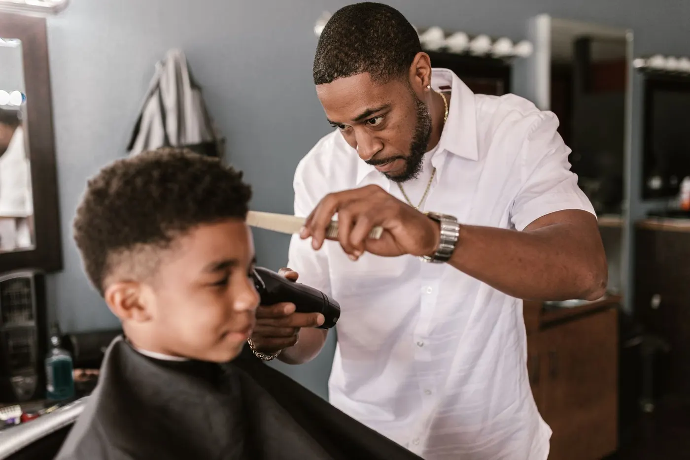
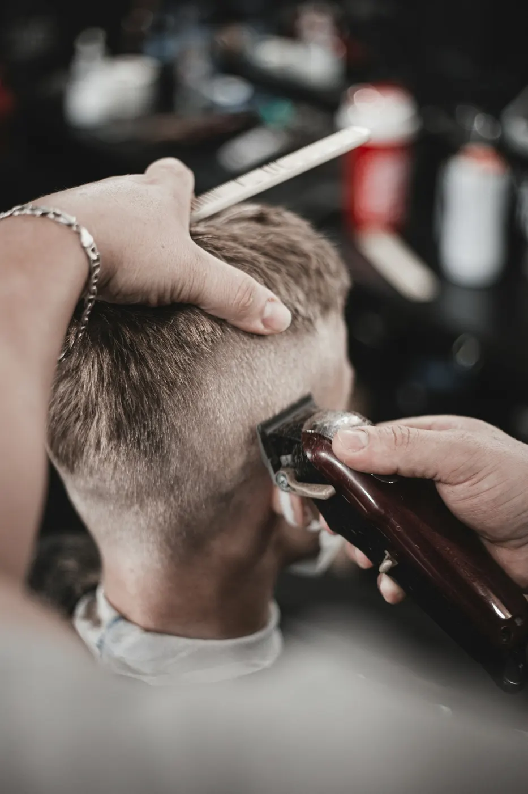
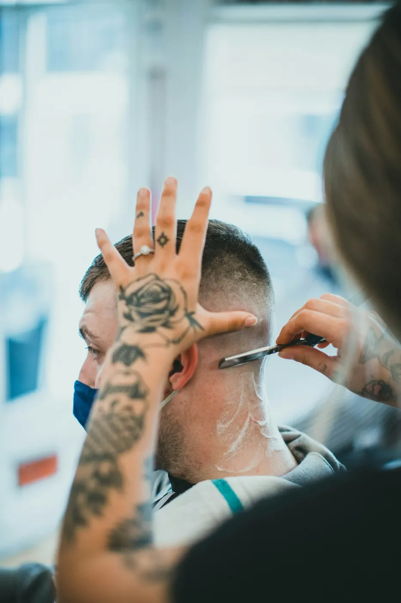

(A equipe)Mais de 40 anos de cadeira somados
Quatro cadeiras, quatro mãos boas.
Conheça cada barbeiro, veja os dias em que está na casa e agende direto com quem você quiser.
(Fundador e barbeiro)Tesoura clássica e pompadour
Henrique Lacerda
Corte bom é o que você consegue arrumar sozinho no dia seguinte.
Abriu a Cobre em 2016 depois de sete anos atrás da cadeira de outras casas. Gosta de corte social bem assentado, risca de lado e topete que aguenta o dia inteiro.
- Na profissão
- 17 anos
- Próximo horário livre
- consultando
Serviços que Henrique atende (8)
- Corte na tesouraR$ 70
- Corte na máquinaR$ 55
- Barba com toalha quenteR$ 55
- Barba na tesouraR$ 45
- Sobrancelha na navalhaR$ 25
- Pezinho e nucaR$ 20
- Corte e barbaR$ 115
- Ritual CobreR$ 175


(Barbeiro)Barba, barboterapia e pigmentação
Otávio Brandt
A barba tem que acompanhar o maxilar, não brigar com ele.
Fez curso de visagismo e passa mais tempo olhando o formato do rosto do que a barba em si. É quem atende a maioria das barboterapias e dos testes de pigmentação.
- Na profissão
- 11 anos
- Próximo horário livre
- consultando
Serviços que Otávio atende (10)
- Corte na tesouraR$ 70
- Barba com toalha quenteR$ 55
- Barba na tesouraR$ 45
- BarboterapiaR$ 85
- Pigmentação de barbaa partir de R$ 50
- Sobrancelha na navalhaR$ 25
- Sobrancelha na pinçaR$ 30
- Nariz e orelha na ceraR$ 20
- Corte e barbaR$ 115
- Ritual CobreR$ 175


(Barbeiro)Degradê, cabelo crespo e cacheado, risco
Jefferson Moura
Cada cacho tem um caimento. O corte respeita isso.
Especialista em textura: crespo, cacheado e ondulado. Faz o degradê à mão livre e desenha risco na navalha. Atende muito pai e filho aos sábados.
- Na profissão
- 12 anos
- Próximo horário livre
- consultando
Serviços que Jefferson atende (8)
- DegradêR$ 75
- Corte na máquinaR$ 55
- Risco e desenhoR$ 20
- Barba com toalha quenteR$ 55
- Pezinho e nucaR$ 20
- Corte infantilR$ 50
- Pai e filhoR$ 110
- Corte e barbaR$ 115


(Barbeiro)Máquina, fade e corte infantil
Rodrigo Kuster
Criança sai daqui querendo voltar. Esse é o teste.
Começou cortando o cabelo dos primos e virou o barbeiro preferido das crianças da casa. Rápido na máquina, caprichoso no acabamento da nuca.
- Na profissão
- 8 anos
- Próximo horário livre
- consultando
Serviços que Rodrigo atende (9)
- DegradêR$ 75
- Corte na máquinaR$ 55
- Risco e desenhoR$ 20
- Sobrancelha na navalhaR$ 25
- Pezinho e nucaR$ 20
- Nariz e orelha na ceraR$ 20
- Corte infantilR$ 50
- Primeiro corteR$ 60
- Pai e filhoR$ 110



(Como a equipe trabalha)
O mesmo cuidado em todas as cadeiras.
Conversa antes da máquina
Todo atendimento começa no espelho: como você penteia, quanto tempo tem de manhã e o que não quer de jeito nenhum.
Material limpo na sua frente
Tesouras e pentes saem da autoclave, navalha e lâmina são abertas na hora e a toalha é trocada a cada cliente.
Formação todo ano
A casa paga um curso por ano para cada barbeiro. Visagismo, texturas e técnicas novas de degradê entram no cardápio depois de treinadas entre a gente.
Ajuste em até 7 dias
Se algo não ficou como combinado, volte em até uma semana que o mesmo barbeiro acerta, sem custo.

(O próximo corte)Com hora marcada ou sem
Puxe uma cadeira, o resto é com a gente.
Horário
| Domingo | Fechado |
|---|---|
| Segunda | 13h às 20h |
| Terça | 9h às 20h |
| Quarta | 9h às 20h |
| Quinta | 9h às 21h |
| Sexta | 9h às 21h |
| Sábado | 8h às 17h |